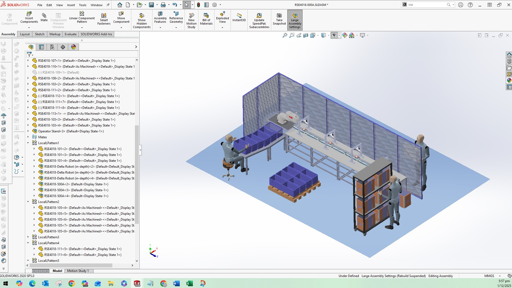

High-Precision Conveyor Pick & Place System (Capstone)
During my internship at WEInnovate Pte Ltd, I was tasked with rescuing a discontinued conveyor-based pick-and-place prototype. The original design had failed its proof-of-concept phase due to critical mechanical limitations.
A forensic analysis of the baseline system revealed that the carriage mount relied on spring-force friction against a smooth Polyurethane (PU) belt. This architecture was highly susceptible to severe belt slippage, tooth jumping (ratcheting), and positional drift, making it impossible to maintain accurate coordinates during acceleration and deceleration.
The stakeholder required a robust, clean-room suitable testbed capable of repeatable precision for automated assembly, all while remaining strictly under a $500 budget constraint.
To transition the project from reactive troubleshooting to structured systems engineering, I first reverse-engineered a digital twin in SolidWorks. Utilizing a Decision Analysis and Resolution (DAR) matrix, I replaced the friction drive with a reverse-tooth belt engagement strategy (using a T5 timing belt) to establish a positive mechanical interlock.
For the control architecture, I integrated an Omron NX1P2 PLC with a Weintek HMI, establishing a sequential state machine for deterministic motion control. I synchronized dual Cool Muscle servo motors and integrated Festo pneumatic cylinders to provide a rigid, physical "hard stop" at the target locations.
During physical integration, I successfully navigated complex hardware challenges, including resolving PNP/NPN sensor polarity mismatches, bridging communication protocols, and managing facility space and limited pneumatic air supply constraints.
The re-engineered system successfully eliminated all belt slippage and tooth jumping. By combining the PLC's velocity control with the pneumatic mechanical stoppers, the conveyor achieved a strict, repeatable positional accuracy margin of ±0.2mm across all target locations.
The prototype passed all Verification & Validation (V&V) criteria, successfully completing a 20-cycle automated repeatability test. Operators were provided with an intuitive HMI dashboard for seamless forward, reverse, and stop controls.
By effectively managing resources and repurposing internal company hardware (such as the Cool Muscle motors and Festo cylinders), the fully functional industrial testbed was delivered for approximately $130 — achieving all objectives well under the $500 budget.